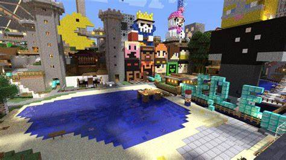

Byl založenej 4 Srpna 2010
Místo původu je Anglie
Zakladatel serveru je SlowRiot ale pomáhal mu RuneChan
Komunita tohoto serveru si myslí že je nestarší server na světě
Hlavní svět Freedonia nebyla nikdy obnovena ani regenerována od svého prvního spuštění v roce 2010, což z ní činí nejdéle nepřetržitě běžící svět ve hře.
